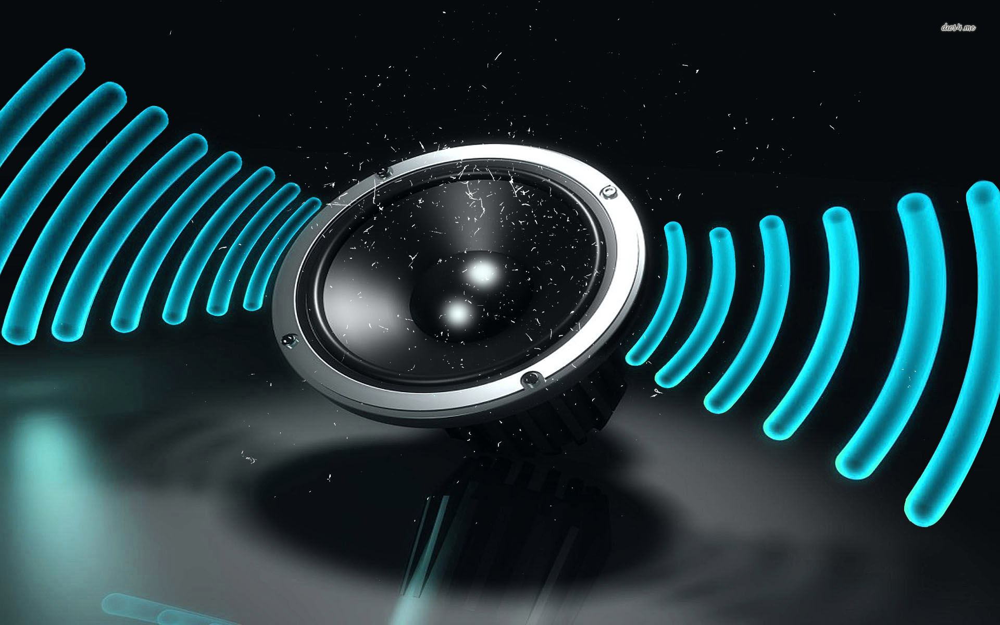

Settings
Customize as you like it
Manage Accounts
Add, edit, or delete user accounts.
Privacy
Control how your data is used and shared.
Data and Storage

Manage your traffic sign detection data and storage.
Avatar
Customize your profile avatar.
Font
Choose your preferred font for the user interface.
Audio
Adjust the volume and other audio settings.
Theme
Change the color scheme of the user interface.